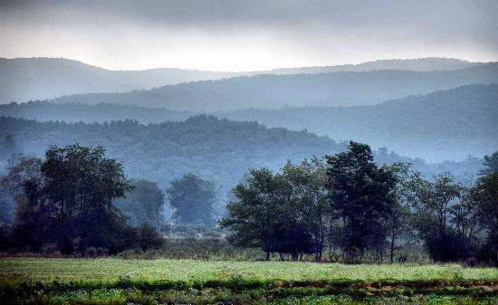

|
Lodging near Snowshoe Ski
Resort, the Greenbrier River Trail, The National Radio Astronomy
Observatory and Cass Scenic Railroad. Come visit the little corner of paradise in Wild Wonderful West Virginia.
To our guests past and future, I have decided to close down the main house at the inn. I will continue to
rent out Allegheny Ridge Room, the bungalow behind the house. Queen size bed, sitting area, 3 piece bathroom.
If you are in need to find a larger place to stay in our wonderful Pocahontas County, you can call Pocahontas County
Convention and Visitors Bureau at 304 799 4636. Thank you for your business! Paula
|